1，2，3，……的序列永无尽头，这就是所谓的自然数。无论开始的数有多大，你总能通过加上1来得到一个更大的数。有人也许会认为自然数是通过一个过程产生出来的，即从l开始连续不断地加1：
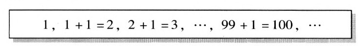
这样一个不断超越任何有限界限的过程，被亚里士多德称之为一种潜无限。然而，亚里士多德不愿认为这个过程——所有自然数的无限集——的终点是合理的。这将成为一种“完成的”无限或“实”无限，亚里士多德宣称这是不合理的。1亚里士多德的观点极大地影响了12世纪的经院哲学家，特别是托马斯·阿奎那。无限的本性问题一直在困扰着数学家、哲学家和神学家。神学家们声称，一种完成了的无限实际上是上帝的一个方面，他们断言，对于人来说，它只能永远是一个秘密。这样的说法并没有使莱布尼茨感到气馁，他写道：
在18和19世纪对于数学变得如此重要的微积分的极限过程正是潜无限的例子。关于这一点，伟大的德国数学家卡尔·弗里德里希·高斯（1777～1855）曾经警告说：
19世纪中叶以后，从当时人们所关注的问题中自然产生出来的数学问题似乎要求在其精确表述中使用完成了的无限。在那些解决这一问题的数学家当中，只有格奥尔格·康托尔不顾高斯的警告，迎接挑战去创立一种关于实无限的深刻而一致的数学理论。康托尔的工作引发了一阵阵的批评浪潮：不仅是数学家，而且连哲学家和神学家也纷纷抨击这个人的鲁莽无礼，他竟然把数学科学的方法带进迄今为止神圣不可侵犯的无限领地。弗雷格支持康托尔对实无限的信念，他认识到了它对数学未来的重要性。同时，弗雷格看得很清楚，一场激烈的斗争就要在那些拥护和诅咒康托尔的无限的数学家之间展开了：
当弗雷格写下这些话时，他不可能预见到，他本人所发展的算术基础将会成为这场斗争早期的一个牺牲品，成为伯特兰·罗素在10年之后的那封著名的信中的那个悖论的受害者，而罗素正是在研究康托尔的无限的过程中发现这个悖论的。弗雷格肯定想象不到，由康托尔的无限所引发的激烈的讨论、研究和争辩有一天会为通用数字计算机的发展提供重要的启发。
1845年，格奥尔格·康托尔出生于俄国的圣彼得堡，似乎没有任何迹象显示他日后会在德国大学任数学教授。康托尔的母亲玛丽·伯姆出生于一个著名的音乐家庭，她本人也是一位颇有成就的音乐家。他的父亲格奥尔格·瓦尔德玛·康托尔出生于哥本哈根，但他小时候被带到了圣彼得堡。据说在那里，他是在一家路德新教的慈善机构中被抚养长大并接受教育的。虽然玛丽已经受过洗而成了一名罗马天主教徒，但在结婚以后改信了路德宗，格奥尔格·康托尔和他的3个兄弟姐妹就是在这种信仰中被抚养长大的。5
格奥尔格·瓦尔德玛·康托尔是一个非常成功的商人。他起先是圣彼得堡的一个批发商，后来又成了圣彼得堡证券交易所的经纪人。一位作者在谈到康托尔的父亲给还在上学的康托尔写的信时，曾动情地说：
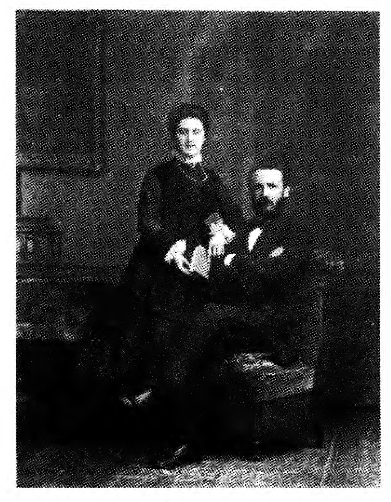
（Lvor Grattan-Guinness）
不仅穷人特别难逃结核病这个19世纪的巨大灾祸的厄运，连富人也很难幸免。康托尔的父亲就是染上了这种可怕的疾病而最终宣告不治。虽然格奥尔格·瓦尔德玛此时才40多岁，但疾病却使他不得不终止自己的生意，在儿子11岁时举家迁往德国。不过他是如此地成功，以至于在他搬迁和去世7年之后，他的4个孩子仍然能够获得很好的给养。
格奥尔格·瓦尔德玛相信工程师的职业最适合发挥他儿子的天分，但是让格奥尔格大为高兴的是，他最终默许了这个孩子当一名数学家的愿望。在柏林，年轻的格奥尔格·康托尔有幸跟3位大数学家学习，他们是：卡尔·外尔施特拉斯、恩斯特·库默尔和莱奥波德·克隆内克。康托尔的数学兴趣一开始集中在非常传统的领域。在他的职业刚刚开始时，很难设想他竟然注定会沿着革命性的方向拓展数学思想的疆域，他的老师克罗内克也将成为他强硬的对手，把他一生的工作斥之为无稽之谈。
从弗雷格的故乡耶拿沿萨勒河往上游走35英里就到了工业城市哈勒，正是在那里，康托尔得到了他第一个大学教职，并将度过自己的后半生。与当时德国学术生涯开始的典型情况一样，康托尔也是被任命为一名无俸的编外讲师。在这种情况下，独立的经济来源显然对于开展学术事业来说是必需的。哈勒大学的领衔数学家爱德华·海涅发现了康托尔超凡的数学能力，并建议他研究一些与无穷级数有关的问题。在第一章中，我们碰到了无穷级数，即莱布尼茨著名的在这样的级数中遇到的“无穷”只是潜无穷，它就是高斯头脑中想到的那种类型。对于一个无穷级数来说，随着一项项地加上去，我们与极限越来越近了（对于莱布尼茨级数来说，这个极限是π/4），我们说级数收敛于这个极限。一个完成了的无限是不成问题的；在这个过程中的任何一个阶段，我们都只是加上了有限多个数。
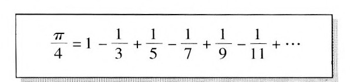
很自然地，无穷级数的问题在自莱布尼茨时代以来的两个世纪里已经有了长足的发展。康托尔研究了三角级数7（之所以这样称呼，是因为级数中的项包含了三角学中的正弦和余弦）。他希望弄清楚在何种情况下两个这种类型的不同级数会收敛于同一值，事实上是希望证明这样的情况是非常罕见的。这项研究把康托尔远远带出了原先的研究领域：他发现为了得到希望的结果，他不得不把无穷集当作完成了的整体来处理，并且对其进行复杂的运算。不久，他就把集合论（Mengenle-hre）发展成了一门独立的学科。
即使我们认为把所有自然数1，2，3，……所组成的集合当成一个完成了的实无限来处理是有意义的，如果我们问这个集合中有多少数，这难道也是有意义的吗？是否有无限多的数可以用来数无限集呢？莱布尼茨并不反对这种完成的无限，他在一封致天主教神父、神学家和哲学家尼古拉·马勒伯朗士的信中讨论了这个问题。他的结论是，这种无限数并不存在。他的推理可以解释如下：只要一个集合中的元素可以同另一个集合中的元素一一对应起来，我们就可以说这两个集合的元素数目是相等的，即使我们不知道这个数目到底是多少18。例如，如果我们发现一个礼堂中既没有空座位，又没有站着的人，那么我们（不必清点）就可以下结论说，礼堂中的人数与座位数是相等的——我们其实是把每一个座位与每一个人一一对应了起来。莱布尼茨认为，如果真有无限数这样的东西存在，那么同样的思想也可以应用于它们：倘若两个无限集之间可以建立起一个一一对应的关系，则我们就可以下结论说，这两个集合拥有同样数目的元素。接着，他建议把这一观念运用到如下两个集合上：由所有自然数所组成的集合1，2，3，……以及由所有偶数所组成的集合2，4，6，……在这两个集合之间很容易设计出一种一一对应的关系，我们只要把每一个自然数与它的二倍对应起来就可以了：
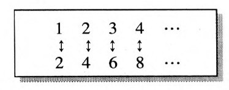
请注意，即使自然数集与偶数集都是无限集，在这两个集合之间也可以建立起这种一一对应关系。比如对应着117这个自然数的偶数是234，对应着4228这个自然数的偶数是8456等等。莱布尼茨推论说，如果真有像无限数这样的东西，那么这种一一对应的存在就会迫使我们下结论说，自然数的数目与偶数的数目是相等的。但这怎么可能呢？自然数中并非只有偶数，而且还有所有的奇数，它们又组成了一个无限集。有一条最基本的数学原理就是整体大于它的任何部分，这可以追溯到欧几里得。8于是，莱布尼茨得出结论说，所有自然数的数目这一概念是不一致的，谈论一个无限集中元素的数目是没有意义的。正如他所说：
康托尔也作了和莱布尼茨一样的推理，从而面临着同样的困境：或者谈论一个无限集中元素的数目是没有意义的，或者某些无限集将与它的一个子集具有相同的元素数目。然而，莱布尼茨选择了前者，康托尔却选择了后者。他开始发展一种能够应用于无限集的关于数的理论，这种理论恰恰认为一个无限集将与它的一个部分拥有同样多的元素数目。
沿着莱布尼茨没有走完的道路，康托尔开始研究在两个不同的无限集之间建立一一对应在什么情况下是可能的。尽管莱布尼茨已经发现在自然数集与它的一个子集（偶数集）之间可以建立起一种一一对应关系，但康托尔还考虑了比自然数集更大的集合。他所考虑的一个例子是可以被表示为（正）分数的数的集合，l0比如1/2或5/3。由于自然数可以用分母为l的分数来表示（比如7/1），所以自然数集可以被看成这个集合的一个子集。但是，康托尔稍加考虑，便发现他可以在由这些分数所组成的集合与自然数集之间建立起一种一一对应关系。分数可以像下面这样排成一个序列：
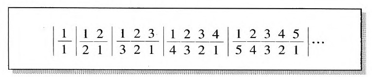
它们是按照每一个分数的分子与分母之和进行分组的：首先是和为2的分数（这样的分数只有1个），然后是和为3的分数（这样的分数有2个），然后是和为4的分数（这样的分数有3个），再后是和为5的分数（这样的分数有4个），依此类推。现在很容易在它们与自然数之间建立起一一对应的关系：
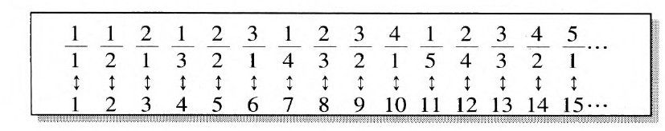
由于从直观上看，分数要比自然数多许多，所以这一证明可能会使我们猜想，每一个无限集都可以与自然数之间建立起一一对应的关系。康托尔的伟大贡献就是说明了情况并非如此。可以用分数来表示的数被称为有理数。如果一个有理数是用小数来表示的，那么最终将会有重复的数字出现。下面是一些例子：
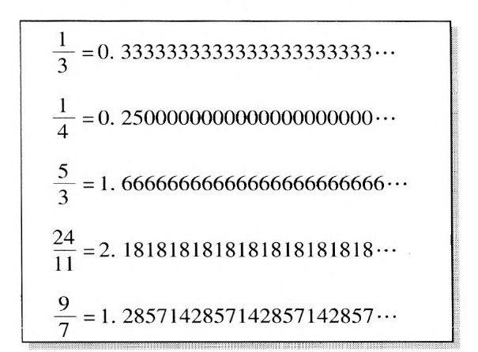
可以用小数来表示的数被称为实数，无论它们最终是否会有数字重复。其小数表示不会重复的那些数被称为无理数。下面是一些无理数的例子：
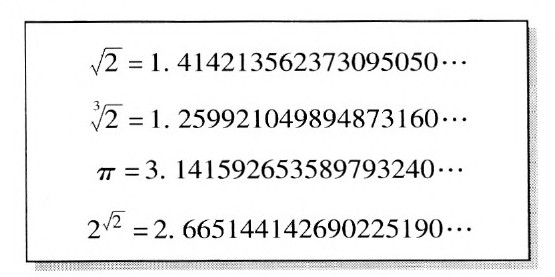
像√2和3√2这样的数连同所有的有理数被称为代数数，这是因为它们可以作为代数方程的根。（√2是方程x2=2的一个根，3√2则是方程x3=2的一个根）。而业已证明，π和2√2不可能是任何代数方程的根，这样的数被称为超越数。
在表明了分数可以与自然数之间建立起一一对应的关系之后，康托尔把注意力转向了由所有代数数所组成的集合，他又一次轻松地找到了一种方法，可以把它们与自然数一一对应起来。很自然地，他想知道这是否对于由所有实数所组成的集合来说也是成立的。我们可以看看28岁的康托尔在1873年给理查德·戴德金（康托尔于前一年在瑞士休假时很偶然遇到的一位年轻数学家）写的信中的思考过程是怎样的。康托尔那时刚刚晋升为哈勒大学的数学教授，他致信戴德金说，（正如我们已经看到的那样）我们可以在自然数与包含更广的所有正分数之间构造出一种一一对应的关系。他甚至说明了这个结论对于由所有的代数数所组成的集合也是正确的。在信中，康托尔提出了自然数集与实数集之间是否可以建立起一一对应的问题。戴德金的回复表明，他对这个问题没有什么兴趣。大约一周之后，康托尔在另一封信里就已经能够向戴德金证明这个非凡的结论了，即实数集无法与自然数集之间建立起一一对应，无限集至少有两种大小。
显然，康托尔本人并不十分确定这一发现是否值得发表。只是在他以前的老师卡尔·外尔施特拉斯鼓励他之后，他才把它拿出去发表。康托尔的工作的革命性含义在那篇四页的论文中表现得并不明显。这篇论文的重点并不是无穷集的大小不只一种这一事实，而是对实数中存在着超越数的一种新的证明，后者只是前者的一个推论。康托尔的证明的大意是，由于代数数可以与自然数一一对应起来，而实数则无法进行这种对应，所以实数集与代数数集是不同的。因此就必定存在着一个实数不是代数数，于是它就是超越数。11
与此同时，康托尔的个人生活也丰富了起来。1874年，他与瓦里·古特曼（Vally Guttman）结了婚，古特曼是他妹妹的一个好朋友，也是一个很有天分的音乐家。他们后来有了六个孩子，从任何方面来说，这都是一个情意绵绵、温暖如春的家庭。尽管康托尔在职业圈子里有强硬甚至是难于相处的名声，但他在家里显然是温文尔雅的。有人是这样描述康托尔一家吃饭时的情形的：
然而，随着他把越来越多的精力投入到集合论的研究中，康托尔那令人不安的新思想开始遭到越来越多的人的反对。他以前的老师克隆内克后来成了康托尔整个研究方向的不遗余力的反对者，他甚至还阻止他发表某些论文。在这种气氛下，康托尔找不到一所大学给他职位，在那里他能遇到与他站在同样高度的同事，他不得不仍然呆在哈勒这块穷乡僻壤。甚至连康托尔劝说他的朋友戴德金来哈勒的努力后来也失败了。1886年，康托尔听从了命运的安排，他在哈勒买了一所漂亮的房子和家人住了下来。
虽然高斯警告数学家不应与完成的无限打交道，但康托尔顾不了这些，他感觉到自己被无限的诱饵牢牢地套住了。迄今为止，无限一直是神学家和形而上学家的领地。他的数学研究已经为他那激进的思想提供了基础，但他大大超越了那些研究所规定的范围。在日常语言中，人们用两种不同但却相互有关联的方式来使用自然数1，2，3，……它们分别被用于计数和排序，比如下面这两个句子：
·这个屋子里有四个人。
·乔的马得了第四名。
日常语言用基数和序数之间的差别来体现这一点：一、二、三……和第一、第二、第三……基数用于指明某个集合中有多少个东西，序数则用于指明这些东西是如何以一定次序排列的。康托尔关于在自然数与实数之间不存在一一对应的发现促使他思考了无穷基数，他关于三角级数的工作则暗示了一种把无穷序数概念化的方法。
康托尔假定每一个集合（无论是有限的还是无限的）都有唯一一个基数。康托尔认为一个集合的基数可以这样来得到：丢掉集合元素的特殊性质，剩下的就是毫无特征的单元。特别地，如果两个集合可以被一一对应起来，那么它们就有同一个基数。设M表示某个完全任意的集合，康托尔引入记号M表示集合M的基数。13例如，19如果
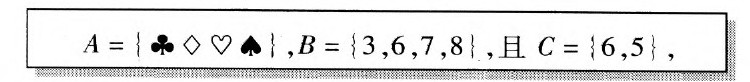
那么
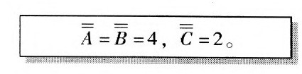
当然，A与B之间很容易建立起一个一一对应关系：
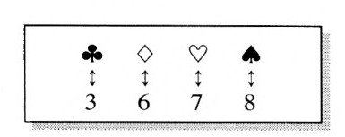
如果两个集合基数不同，那么会发生什么情况？用符号来讲，这个问题就是说，对于集合M与集合N而言，什么时候M≠N。在这种情况下，两个基数中一个较大一个较小。利用标准符号＜（“小于”）和＞（“大于”），我们可以用M＜N（或者等价的M＞N）来表示N具有较大的基数。为了证明这一点，我们只需在M和N的某个子集之间建立一个一一对应关系。14于是，在上面那个G＞C的例子中（因为4＞2），A的子集{（◇♡）}可以这样与C对应：
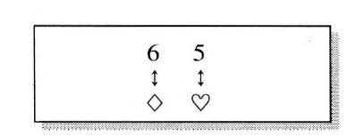
只要这些集合都是有限集，那么所有这些似乎都只不过是在用晦涩的术语表示简单而熟悉的事物。的确，康托尔思想的力量只有在运用到无限集时才能表现出来。康托尔把无限集的基数称为超限数。他关于超限数的第一个例子是自然数集的基数，并用符号ℵ0来表示。ℵ0通常读作“阿列夫零”，ℵ是希伯莱字母表上的第一个字母。20
康托尔用符号C来表示实数集的基数（因为实数集有时被称为连续统[continuum]）。康托尔深信，C就是继ℵ0之后的下一个超限基数。ℵ0与C之间不存在别的基数，这一猜想被称为连续统假设。尽管康托尔为证明这个猜想付出了多年艰辛的努力，但最终未能解决这个问题：他既不能证明连续统假设为真，也不能证明连续统假设为假。这一失败带给了康托尔无尽的痛苦。今天我们知道，可怜的康托尔是在枉费心机。库尔特·哥德尔于1938年和保罗·科恩于1963年的重大发现揭示了，如果连续统假设问题可以被解决，那么就必须超越普通数学的方法。所以康托尔没能解决这个问题也就不足为奇了。事实上，直到今天，哥德尔-科恩的否定结果是否就是最好的结果，以及是否可能有新的强有力的方法能够得出一个更加令人满意的结果，专家们对此仍然莫衷一是。
在康托尔关于三角级数的工作中，他考虑了某种可以被一步步反复应用的特定过程：第一步、第二步、第三步等等。然而使康托尔跨入超限领域的是，他意识到在所有这些无限步之后还有更多的步。不久，他开始谈及第ω步，第（ω+1）步以及更多的步，并且发展出后来被他称为超限序数的算术。21让我们首先看一看有限集{？◇？}。其成员可以按照六种不同的方式加以排列：
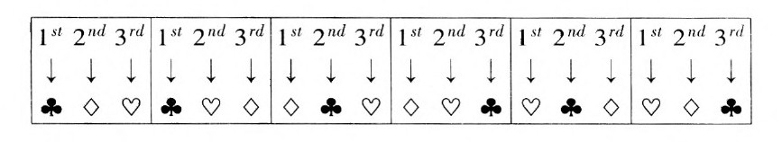
然而，这6种排列都显示出同一种样式：第一项后面跟着第二项，第二项后面跟着第三项。任何有限集都是这样的：对其成员进行排列的所有不同方式的背后都显示出同一种样式。如果一个集合有n项，那么任何排列都会显示第一项、第二项……最后是第n项。康托尔发现无穷集的情况是完全不同的。无穷集可以以不同的方式排列成非常不同的样式。例如，假定把自然数1，2，3，……排列成所有偶数成员在所有奇数成员之前：
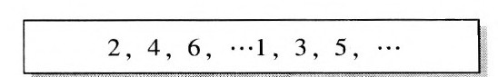
如果我们试图用序数来说明每一项在序列中的次序，那么我们就会发现，我们所熟悉的有限的序数都被偶数用尽了：
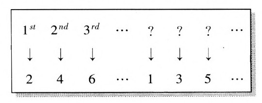
康托尔发现了如何用超限序数来解决这个困难。于是，在所有的有限序数之后，康托尔又设定了第一个超限序数，他用希腊字母ω来表示，在它之后是ω+l，ω+2等等。然后康托尔就可以很容易地为上例中的奇数排序了：
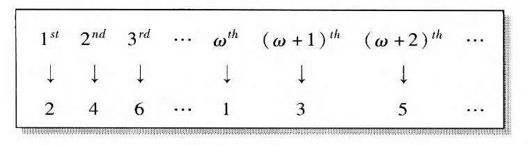
康托尔发现，自然数可以用越来越大的序数以许多不同的方式加以排列。他称有限序数即自然数l，2，3，……为第一数类，称为自然数的不同序列排序的超限序数为第二数类。康托尔在研究构成第二数类的超限序数集时，用符号ℵ1来表示它的基数。值得注意的是，康托尔能够证明，ℵl就是紧接在最小的超限基数ℵ0之后的下一个基数。因此，ℵ1＞ℵ0，不存在大于ℵ0而小于ℵ1的基数。
康托尔一直努力试图证明的连续统假设是，C就是继ℵ0之后的下一个基数。他已经知道，ℵ1就是ℵ0之后的下一个基数，所以连续统假设就等价于这样一个问题：
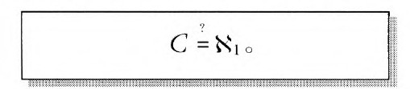
不幸的是，康托尔虽然写下了这个方程，但他并没有证明它为真。
既然有第一数类和第二数类，那么是否有第三数类呢？绝对有！在为基数为ℵl的集合排序时，第一数类和第二数类的数就不够了。康托尔把第三数类最开始的超限基数记为ωl，并把第三数类中的所有序数所组成的集合的基数称为ℵ2。然后，康托尔可以证明ℵ2就是紧接在ℵ1之后的下一个基数。康托尔发现这个过程是永无尽头的：ℵ2之后还有ℵ3，ℵ3之后还有ℵa等等。在所有这些之后是ℵω等等。
当康托尔提出这些思想时，他实际上是在对一个从未有人到过的领域进行着探索。他无法依靠任何数学规则，而不得不凭借自己的直觉独自创造。考虑到他所研究的领域的本性，他的工作一直顺利地进行了下去，这是令人赞叹的。但是从一开始，反对康托尔整个事业的呼声就此起彼伏。克罗内克的反对我们已经提到了。有一则在数学家之间流传很广的故事说，著名的法国数学家昂利·庞加莱曾经说，总有一天，康托尔的集合论“会被看作一种被征服了的疾病”。尽管这个故事的真实性仍有待考证，但从它的流行程度就可看出康托尔那时正面临着怎样的挑战。
如果说今天的学生从康托尔的成果中学到了某种东西，那么这多半就是他的对角线方法。这种方法是康托尔于1891年在一篇仅有四页的论文中发表的，这时他几乎已经停止了数学研究，他那些讨论超限数的重要文章也已经发表甚至重印。1874年，康托尔发表了他对自然数与实数之间不存在一一对应的证明，或者用他的符号表示，就是ℵ0＜C。这个证明借用了外尔施特拉斯所发展的极限过程的基本理论中的方法。利用对角线方法，同一结论可以从基本逻辑原理中得出。在我们的故事中，对角线方法将会不断出现。
在解释对角线方法时，使用一个贴着标签的包裹的比喻将是有益的。特别之处在于，被用作标签的东西就是包裹里的东西。举例说来，考虑一副纸牌中的4种花色：♧◇♡♤。让我们把其中的每一种花色用作一个“包裹”上的标签，而包裹中所包含的也正是这些花色中的某些种，比如：
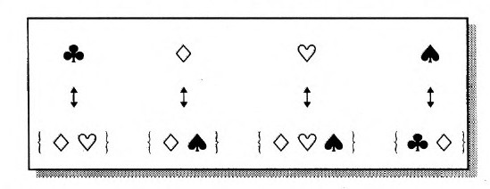
我们可以用表格的形式来表示这一信息，其中+表示某一项在包裹内，-表示它不在包裹内：
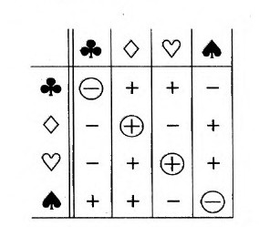
在这张表中，左边的一列是4种标签，包裹中的内容显示于行中。对角线上的+和-外面围有圆圈，以示强调。对角线方法是一种把相同类型的项合到一个新包裹中去的技巧，它可以使这个新包裹中所含的东西与所有贴了标签的包裹都不同。它的工作过程是这样的：我们制作一张新的表格，并把相反的符号插到其对角线上。于是，由于与♧相对的是-，所以在我们的新表中，♧对应的是+。同样，♡对应-，◇对应-，♤对应+。结果如下：
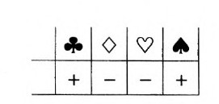
于是，我们的新包裹就是{♧♡}。我们何以能够确信它与任何贴了标签的包裹都不同呢？情况是这样的，它不可能是标签为♧的包裹，因为♧不在那个包裹中，而在我们新的包裹中。它也不可能是标签为◇的包裹，因为◇在那个包裹中，而不在我们新的包裹中。依此类推。
现在，包裹当然指的就是集合，而标签则是一种在集合与其成员之间建立起一一对应的方法。这种方法是完全一般的：开始时的集合是否是一个无限集，这是无关紧要的。如果用那个集合中的每一个元素来做某个由同一些元素中的某些元素所组成的集合的标签，那么就可以用对角线方法来获得一个由那些元素所组成的新的集合，它与所有已经贴过标签的集合都不同。
让我们看看，如果我们从自然数集1，2，3，……开始，这种方法将怎样运作。设想把这些数中的某一些装进一个包裹。它可能包含{7，11，17}，还可能包含所有的偶数。现在，让我们设想把自然数本身作为标签，就像下面这个无穷序列一样：
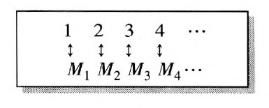
其中M1，M2，M3，M4，……中的每一个都是由自然数所组成的包裹。这时，我们用下表来获得一个新的集合M，它不同于每一个集合：
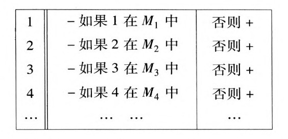
换句话说，如果1不属于M1，那么1就属于M；如果2不属于M2，那么2就属于M；依此类推。因此，M是一个不同于M1，M2，……的自然数集合。由于M1，M2，M3，M4，……表示1，2，3，……与自然数集之间任何可能的一一对应，我们发现，没有什么对应可以包含自然数集的一切子集。换句话说，由一切自然数集所组成的集合的基数要大于ℵ0。事实上，我们可以证明这个基数就是实数集的基数C。15于是，对角线方法就为我们提供了另一种说明实数比自然数更多的方法。
这种方法非常具有一般性，它提供了另一种产生许多超限基数的方法（与康托尔的ℵs序列不同）。例如，我们可以设想以实数作为标签的实数包裹。对角线方法表明，没有这样的标签可以包含一切实数集。因此，由所有这样的集合所组成的集合的基数必定大于实数集的基数C。16而且，没有必要就此止步。直到今天，以这种方式获得的基数是如何与康托尔的ℵ0，ℵl，ℵ2，……相联系的问题仍然是困难和争论的一个来源。
从一开始，康托尔就面临着反对意见，他们主要反对这样一种观念，即生活在一个有限世界的有限的人类竟然期望能够对无限作出有意义的断言。不过就在世纪之交的时候，人们发现用康托尔的超限数进行不加限制的推理会导致非常荒谬可笑的结果，于是情况变得更加糟糕了。麻烦均源于把康托尔的超限基数或序数都收在一个集合中的尝试。如果存在着一个由所有基数所组成的集合，那么它的基数该是多少呢？它必须要比任何基数都大。但这又怎么可能呢？一个基数怎么可能比所有基数都大呢？
就在康托尔意识到这个令人不安的悖论之后不久，意大利数学家布拉里福蒂在试图处理由所有超限序数所组成的集合时又发现了一个类似的困难：他表明，这样一个集合将导致一个比任何超限序数都大的超限序数，这显然是一个荒谬的结论。然后伯特兰·罗素登场了，他对所有这些给出了最为致命的一击。他考虑了这样一个问题：是否存在一个所有集合的集合？如果存在着这样一个集合，那么倘若把对角线方法应用于它，会出现什么结果？换句话说，如果我们考虑把任意多的集合打成包裹，然后用集合去给这些包裹贴标签，那么会出现什么情况？当然，我们将得到一个不同于所有那些已经拥有标签的集合的集合。正是在考虑这种情况时，罗素发现了他那个关于由一切不是自身成员的集合所组成的集合的著名悖论。这就是我们在上一章中谈到的罗素向弗雷格所传达的悖论。
尽管罗素是通过思考康托尔的思想而发现他的悖论的，但这个悖论本身丝毫不依赖于有关超限数的考虑。在许多数学家看来，最基本的逻辑推理似乎已经变得不可靠了，在这当中充满了陷阱。毫不奇怪，大多数数学家仍然继续着自己通常的工作，他们离这些问题还很遥远。但是对于那些关心有关数学本性的基本问题的人来说，这种状况不啻为数学基础的一场危机。这些数学家和哲学家不久就发现他们分成了对立的阵营。特别是，一些人认为集合论是数学所必需的一部分，另一些人则力图使数学免于受到康托尔的超限数的污染。逻辑学家在20世纪头30年的工作就是被这些问题所主导的。
1884年，康托尔首次遭遇一系列的精神崩溃，严重的沮丧状态持续了大约两个月。康复之后，康托尔把自己的精神问题归因于他关于连续统假设的紧张工作以及克罗内克的攻击上。这个时候，他甚至给克罗内克写了一封信建议恢复友谊，克罗内克诚挚地回复了这封信。除了几件现在被认为是躁狂抑郁症的事件以外，康托尔对他的遭遇的解释在很多年里都被人广泛接受。现在一般认为，不管外部事件有多么严重，其精神紊乱的根本原因在于有缺陷的脑的特质，以及像康托尔与克罗内克意见不和这样的环境因素，连续统假设只是促成了而不是造成了主要的混乱。17
除了那篇已经提到的论述对角线方法的论文，这一事件大致标志着康托尔在集合论方面的奠基性工作的结束。在严重的精神疾病的间歇，康托尔研究了哲学、神学特别是莎士比亚戏剧的作者身份问题。对于康托尔来说，1899年是危机四伏、悲剧重重的一年。正是在这一年，他第一次遭遇了集合论悖论，他13岁的爱子之死也令他痛不欲生。
对学科只满足于懂得一点皮毛，这不是格奥尔格·康托尔的风格。他使自己成了一名研究伊丽莎白时期特别是莎士比亚戏剧的专家，他发表了一系列专著声称证明了这些剧本其实是出自弗兰西斯·培根之手。当然，这与集合论或超限毫无干系。不过，康托尔发现自己在哲学和神学方面的研究绝对与他关于无限的工作有关。康托尔相信，在超限之外还存在着一个绝对的无限，它仅靠人类的理解力是永远无法完全企及的。甚至是出自集合论的令人苦恼的悖论也应当从这一观点来理解。例如，所有超限基数的乘积应当被认为是绝对无限的，这就是为什么仅仅认为它们是超限的就会导致矛盾的原因。
在德国哲学思想中，伊曼努尔·康德是一个至关重要的人物，他的批判哲学建立在两个关键问题之上：
·纯粹数学如何可能？
·纯粹自然科学如何可能？
康德对第一个问题的回答依赖于他所谓的对空间（对应于几何学）和时间（对应于算术）的“纯直观”。他认为这些直观完全独立于经验感觉。18尽管康德强调了科学的重要性，但19世纪德国的后康德哲学却沿着一条不同的方向发展了，它转向了一种认为观念和概念是第一位的绝对唯心论，认为世界似乎就是由它们构成的。这场运动的领导者之一是格奥尔格·弗里德里希·黑格尔，数以百计的忠实弟子都听过他的讲演。黑格尔拥有许多追随者（其中最著名的是卡尔·马克思和弗里德里希·恩格斯），直到今天，学者们仍然能够在他的著作中找到许多有价值的东西。然而，他有时作出的一些怪异推理只会招致嘲笑，特别是在他那部两卷本的《逻辑学》中，读者曾被要求对如下深刻的思想进行思考：
这两个范畴在彼此转化的过程中融合为一个更进一步的范畴：生成。
与此同时，在那个世纪行将结束之时，部分是由于奥古斯特·孔德的“实证主义”思想，部分是由于科学的发展，一种新的“经验论”哲学开始在德国发展起来。在经验论者看来，理解世界主要依靠的是感觉材料。康托尔把这种经验论看作是对黑格尔式的胡说的一种反抗，但却发现它既粗糙又浅薄。经验论哲学的主要支持者之一，大科学家赫尔曼·冯·亥姆霍茨希望重新像康德那样把经验科学放到核心位置。他的一本论述计数和测量的小册子激怒了康托尔。1887年，康托尔在一篇从数学、哲学和神学观点讨论超限数的文章中，批评这本小册子表达了一种“极端经验心理学的观点，连带一种靠不住的教条主义”。他又接着抱怨说：
这篇文章被收在1890年出版的一本康托尔关于超限数的论文选集中。弗雷格在应约评价这本书时，特意强调了刚刚引用过的这段话。在他收到伯特兰·罗素那封毁灭性的信之前10年的一段引人注目的话中（本章开头已经部分引用过），弗雷格写道：
1918年1月6日，格奥尔格·康托尔因心脏病突发而去世，其时，第一次世界大战的战火仍在蔓延。今天，尽管弗雷格在其隐喻中所预言的斗争很是令人惊奇，但它却并未产生任何决定性的结果。也许这场斗争的最令人称奇的副产品就是阿兰·图灵关于一种通用计算机的数学模型。